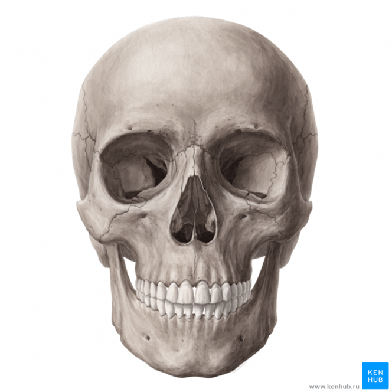
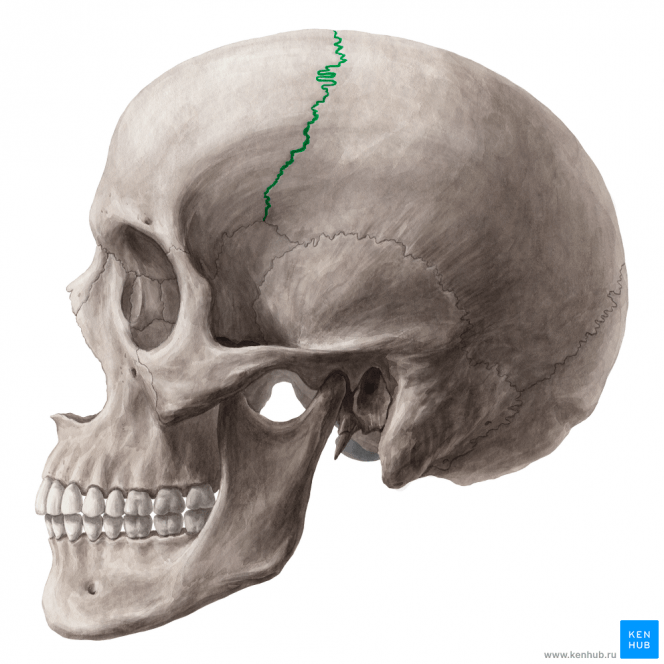
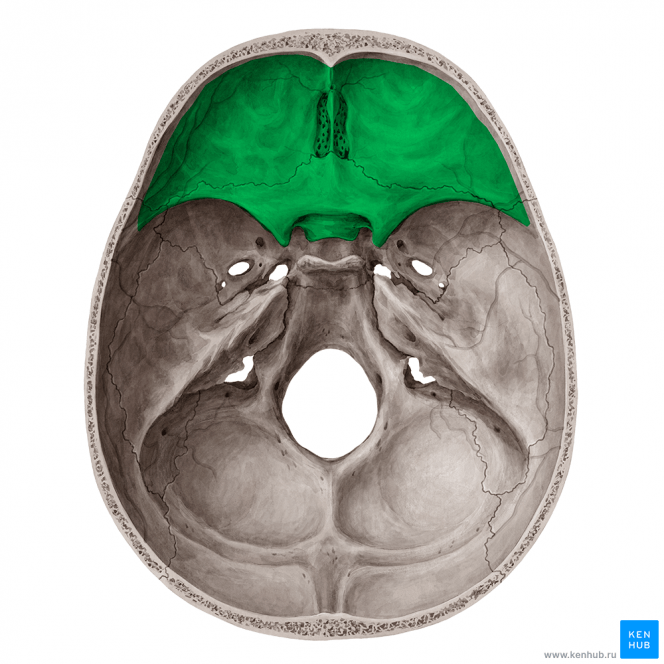
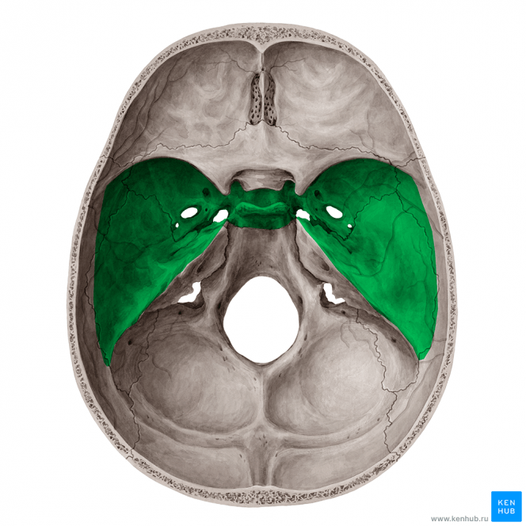
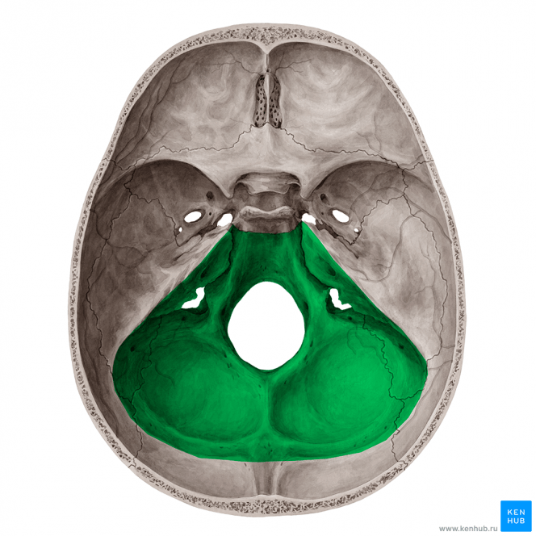
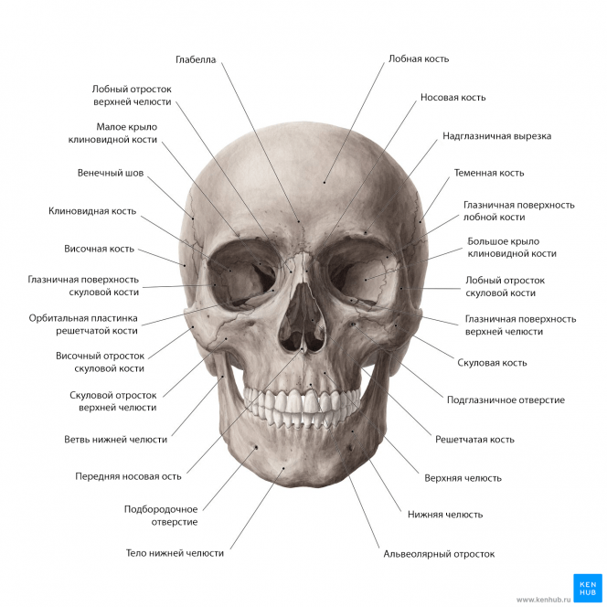
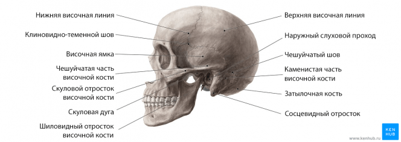
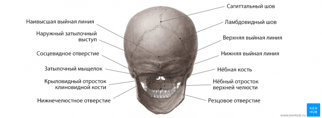
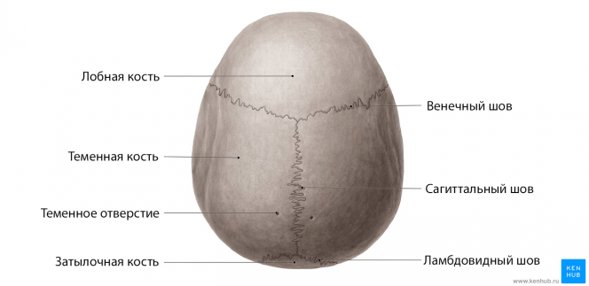
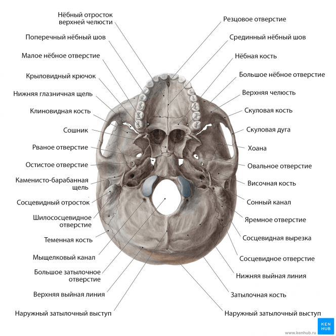

Что такое череп?
Человеческий череп состоит из 22 костей (или 29, в том числе внутренних слуховых косточек и подъязычной кости), которые в основном соединены между собой с помощью окостенелых суставов, так называемых швов. Череп делится на мозговой череп ( нейрокраниум Anium ) и лицевой ( висцерокраниум ). Его основная задача — защита самого важного органа человеческого тела — мозга.
Головной мозг почти полностью окружен нейрокраниумом, за исключением большого затылочного отверстия и других отверстий в основании черепа, которые служат точкой входа и выхода для кровеносных сосудов и черепных нервов. Кроме того, череп поддерживает все лицевые структуры.
Компоненты и особенности
Черепная коробка состоит из свода черепа и основания черепа. Свод черепа состоит из пар теменных костей и частей лобной кости, а также затылочной кости. Важнейшими швами человеческого черепа являются:
- венечный шов (между лобной и теменной костью)
- сагиттальный шов (разделяет теменные кости)
- ламбдовидный шов ( проходит горизонтально между затылочной костью и обеими теменными костями)
Это три самых важных из всех 33 швов, образованных костями человеческого черепа.
Основание черепа — это нижняя часть нейрокраниума. Если смотреть изнутри, его можно подразделить на переднюю, среднюю и заднюю черепные ямки. Основание черепа состоит из частей лобной, решетчатой, клиновидной, затылочной и височной костей.
К лицевому скелету относятся все кости, расположенные перед полостью черепа. Основные его представители — верхняя челюсть и нижняя челюсть. Орбита и носовая полость формируются скуловой, носовой, небной, слезной костями, сошником и нижней носовой раковиной.
Отверстия и их содержимое
Большинство отверстий, через которые проходят соответствующие нервы и кровеносные сосуды, расположены у основания черепа. Далее обсуждаются наиболее важные структуры в порядке их расположения в трех черепных ямках.
Передняя черепная ямка
Передняя черепная ямка состоит из дырявой пластинки в центре, так называемой решетчатой пластинки (lamina cribrosa). Приблизительно 20 решетчатых отверстий служат проходом для обонятельных нервов к обонятельной слизистой оболочке носовой полости.
И зрительный нерв, и глазная артерия проходят через зрительный канал, расположенный в центре клиновидной кости. Малое крыло клиновидной кости (ala minor) образует дорсальную границу передней черепной ямки.
Средняя черепная ямка
Средняя черепная ямка лежит немного глубже передней черепной ямки. Верхняя глазничная щель, которая ограничена большим и малым крылом клиновидной кости содержит блоковый нерв, отводящий нерв, глазодвигательный нерв и глазной нерв. Турецкое седло является углублением клиновидной кости. В центре средней черепной ямки оно образует гипофизарную ямку, в которой находится гипофиз.
Следующими важными отверстиями являются:
- круглое отверстие (проходит верхнечелюстной нерв)
- овальное отверстие (проходит нижнечелюстной нерв)
- сонный канал (проходит внутренняя сонная артерия)
Задняя черепная ямка
Самое большое отверстие в черепе — большое затылочное отверстие. Здесь ствол мозга выходит из черепа и становится спинным мозгом. Большое затылочное отверстие находится в центре задней черепной ямки. Она отделена от средней черепной ямки спинкой турецкого седла и верхним краем каменистой части височной кости.
Следующими важными структурами являются:
- внутренний слуховой проход (лицевой нерв, преддверно-улитковый нерв),
- яремное отверстие (внутренняя яремная вена, языкоглоточный нерв, блуждающий нерв, добавочный нерв)
- подъязычный канал (подъязычный нерв))
Передний (фронтальный) вид
Лобная кость находится сверху в то время как нижняя челюсть расположена снизу, придавая черепу в яйцевидную форму, если смотреть спереди. Лобная кость лежит под кожей лба, над глазничными полостями, переносицей (которая образована двумя носовыми костями) и лобным отростком скуловой кости.
Верхняя челюсть занимает большую часть пространства в средней части лицевого скелета. Вместе с носовыми костями она образует границы переднего носового отверстия. Внизу нижняя челюсть и альвеолярные отростки верхней челюсти образуют нижнюю часть передней части черепа.
Вид сбоку
Боковую часть черепа можно разделить на три области:
- Область лица
- Височная область, которую мы рассмотрим подробно в данном разделе.
- Затылочная область
Височная область подразделяется скуловой дугой на височную ямку и подвисочную ямку. Лобная кость, теменная кость, большое крыло клиновидной кости и чешуйчатая часть височной кости встречаются в птерионе, образуя дно височной ямки.
Задний аспект черепа образован теменной костью верхнелатерально, височной костью нижнелатерально и затылочной костью по центру. Иногда такой вид черепа называют затылочным
Вид сверху
Сверху мы можем видеть часть черепа в форме эллипса, называемую сводом черепа. Он образован четырьмя костями: лобной костью, двумя теменными костями и затылочной костью. Эти кости соединяются тремя швами:
- Венечным швом — между лобной и теменными костями.
- Ламбдовидным швом: между затылочной и теменными костями.
- Сагиттальным швом: между двумя теменными костями.
Чтобы лучше понять анатомию этой области, не забудьте посмотреть соответствующий видеоурок, прочитать наши статьи, чтобы еще больше укрепить свои знания с их помощью, узнав все, что вам нужно об анатомии черепа.
Основание черепа (вид снизу)
Основание черепа простирается от верхних затылочных линий затылочных костей сзади до верхних резцов спереди. Этот отдел черепа содержит множество важных структур, в том числе самое большое отверстие черепа — затылочное отверстие. Мы можем разделить эту часть черепа на пять отделов, чтобы облегчить изучение:
- Передняя часть: твердое небо и верхняя челюсть.
- Средняя часть: клиновидная кость, каменистые отростки височных костей и базилярная часть затылочной кости.
- Боковые части: скуловые дуги, нижнечелюстные ямки, барабанные пластинки, шиловидный и сосцевидный отростки.
- Задний отдел: затылочная кость.
Краткий обзор отверстий
- Решетчатая пластинка — обонятельные нервы
- Зрительный канал — зрительный нерв, глазная артерия
- Верхняя глазничная щель — блоковый, отводящий, глазодвигательный и глазничный нервы
- Круглое отверстие — верхнечелюстной нерв
- Овальное отверстие — нижнечелюстной нерв
- Каротидный канал — внутренняя сонная артерия
- Большое затылочное отверстие — ствол мозга
- Внутренний слуховой проход — лицевой и преддверно-улитковый нервы
- Яремное отверстие — внутренняя яремная вена, языкоглоточный нерв, блуждающий нерв, добавочный нерв
- Подъязычный канал — подъязычный нерв